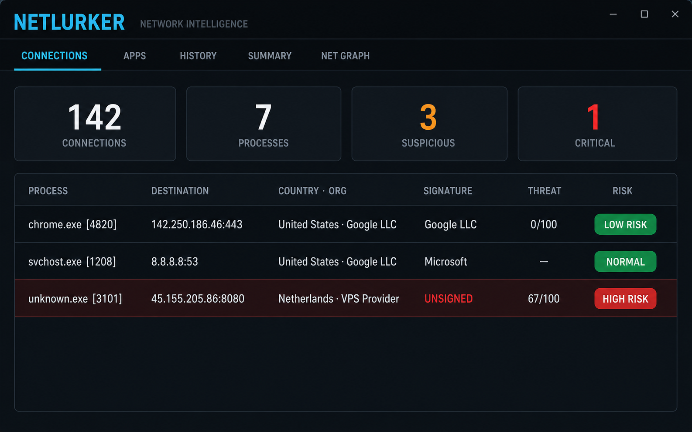

NetLurker turns raw socket tables into actionable network intelligence — process, signature, country, threat feeds, TLS, and behavioral baselines — in one dark, keyboard-driven window.

A verified capture of the current candidate is still pending. Legacy artwork is not evidence of measured traffic. See the repository for build status, limitations and the release checklist.
Try the explicitly labeled Windows demo with Ctrl+D. Synthetic examples are not live reputation findings. A risk score is an investigation priority, not a malware probability.
Authenticode signatures, publisher, command line, owning module, geo/ASN, reverse DNS, RDAP ownership, TLS certificate analysis, HTTP banner & EOL detection.
Heuristic scoring with MITRE-mapped reasons: C2 beacon patterns, persistence, rare privileged ports, unsigned processes, datacenter targets, exfiltration ratios.
One keypress turns evidence into a structured verdict — decision, confidence, reasons, concerns, recommendation, follow-up actions. A separate local heuristic report is available without an API key.
Process ↔ endpoint graph colored by risk, edge thickness by data flow, endpoints labeled with country codes.
Per-process connection baselines (EMA + variance). A process that suddenly talks 3× more than usual triggers a toast, a notification, and a report entry.
Drop a JSON definition in plugins\ and feed your own intelligence
source: IP on stdin, JSON verdict on stdout.
Local monitoring has no developer telemetry. Enrichment sends queried addresses to providers; optional AI sends investigation context.
✓ No telemetryNo analytics, no ads, no account.
✓ Explicit lookupsSeveral enrichment sources are enabled by default. Review Settings and the privacy policy before monitoring a sensitive network: ip-api.com, AbuseIPDB + DNS blacklists + CIRCL, rdap.org, VirusTotal (only with your key), a single TLS ClientHello and a single HTTP HEAD per target.
English by default — UI, errors, risk reasons, column headers, tooltips, AI prompts, and reports use the selected language; raw provider errors may retain their original wording.
Candidate packaging produces a ZIP and a SHA256SUMS file so you can verify integrity before you run it. Hashes are not code signatures; candidates require review before publication.
No installer needed. First run shows a quick-start card and a demo mode with realistic sample data — no API keys required. Use Ctrl+D to switch between demo and real data.